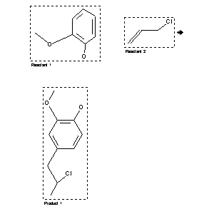

|  |
| FA | RX(1); FLST(1); RX(1) |
Reaction (1 of 1)
| Reaction ID | 666015 |
| Reactant BRN | 508112; 635704 |
| Reactant | 2-methoxy-phenol; 3-chloro-propene |
| Product BRN | 3257772 |
| Product | 4-(2-chloro-propyl)-2-methoxy-phenol |
| No. of Reaction Details | 1 |
Reaction Details (1 of 1)
| Reaction Classification | Preparation |
| Reagent | copper-powder |
| Temperature | 115 |
| Comment | Handbook |
| Citation Pointer | 1627332; Journal; Mel'kanowizkaja; Zukerwanik; DANUAO; Dokl.Akad.Nauk UzSSR; 11; 1959; 40, 41, 43; Chem.Abstr.; 1960; 20948; |
Reference (1 of 1)
| Citation Number | 1627332 |
| Document Type | Journal |
| Authors | Mel'kanowizkaja; Zukerwanik |
| CODEN | DANUAO |
| Journal Title | Dokl.Akad.Nauk UzSSR |
| Journal/Review Without CODEN | Chem.Abstr. |
| Number | 11 |
| Publication Year | 1959; 1960 |
| Page | 40, 41, 43; 20948 |